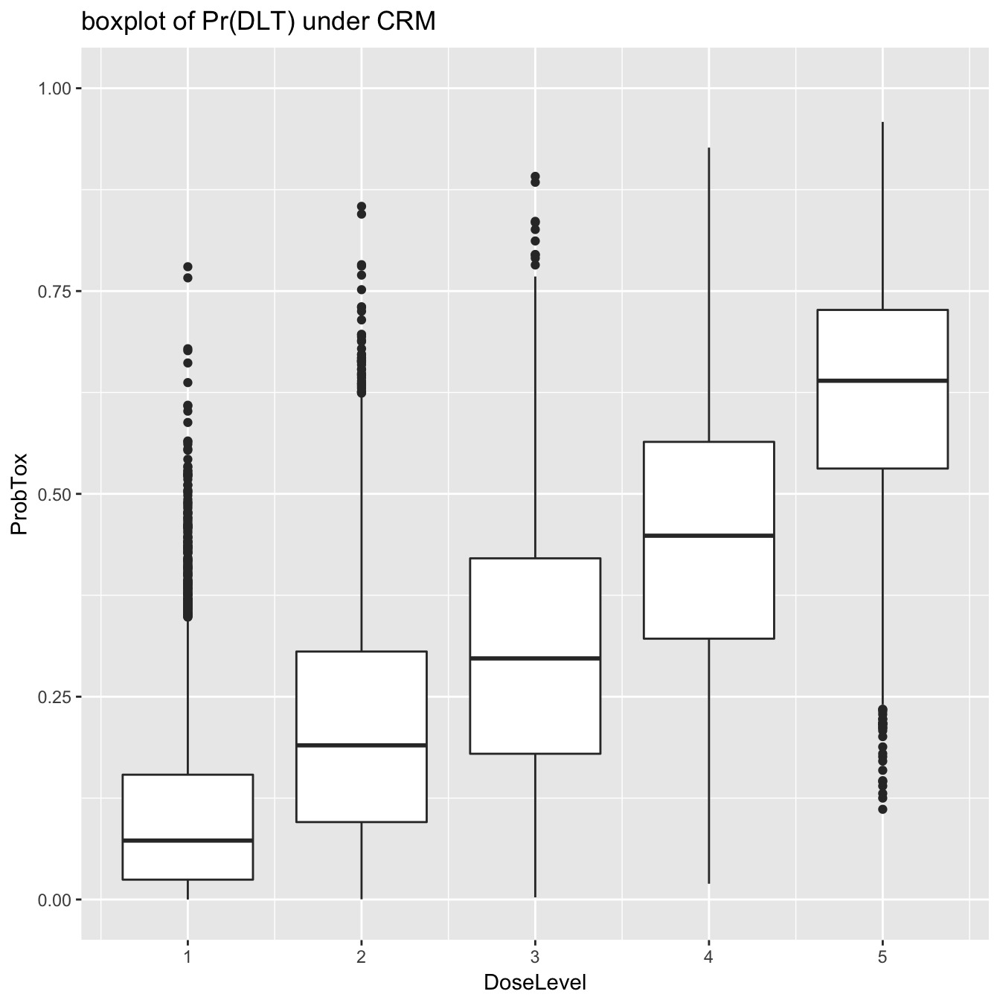
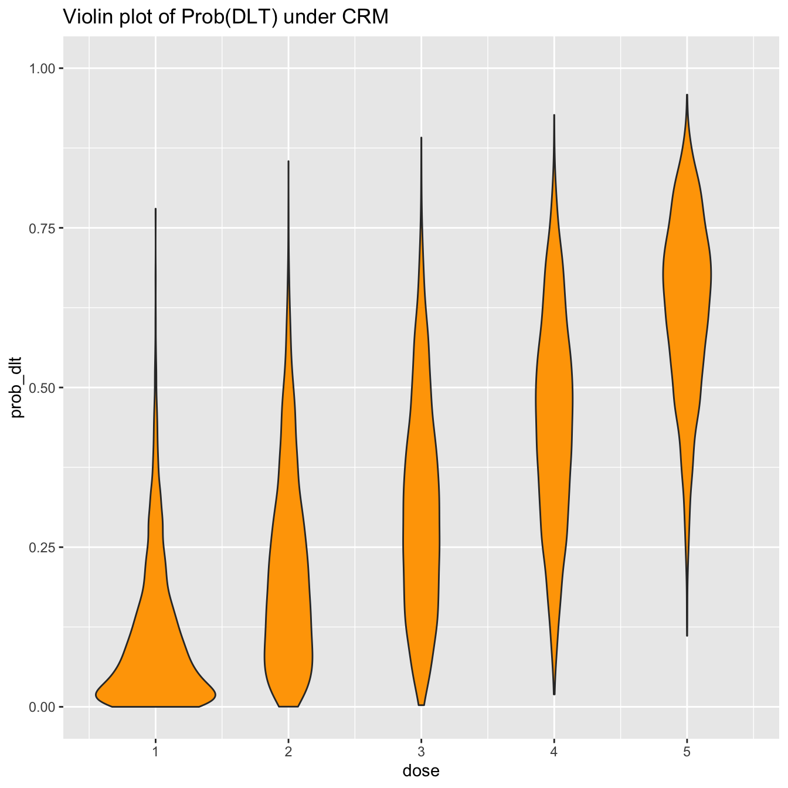
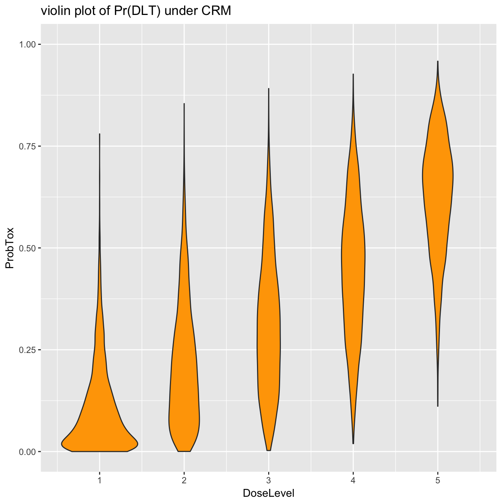
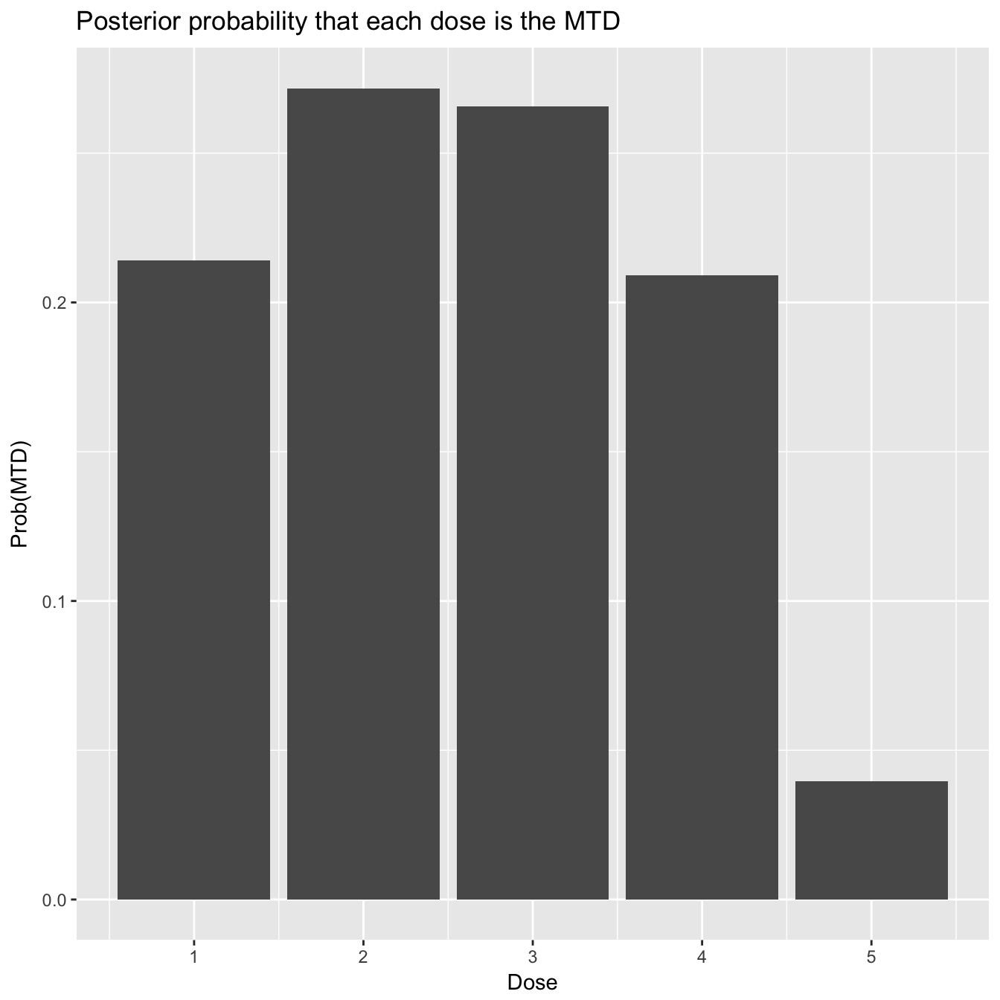
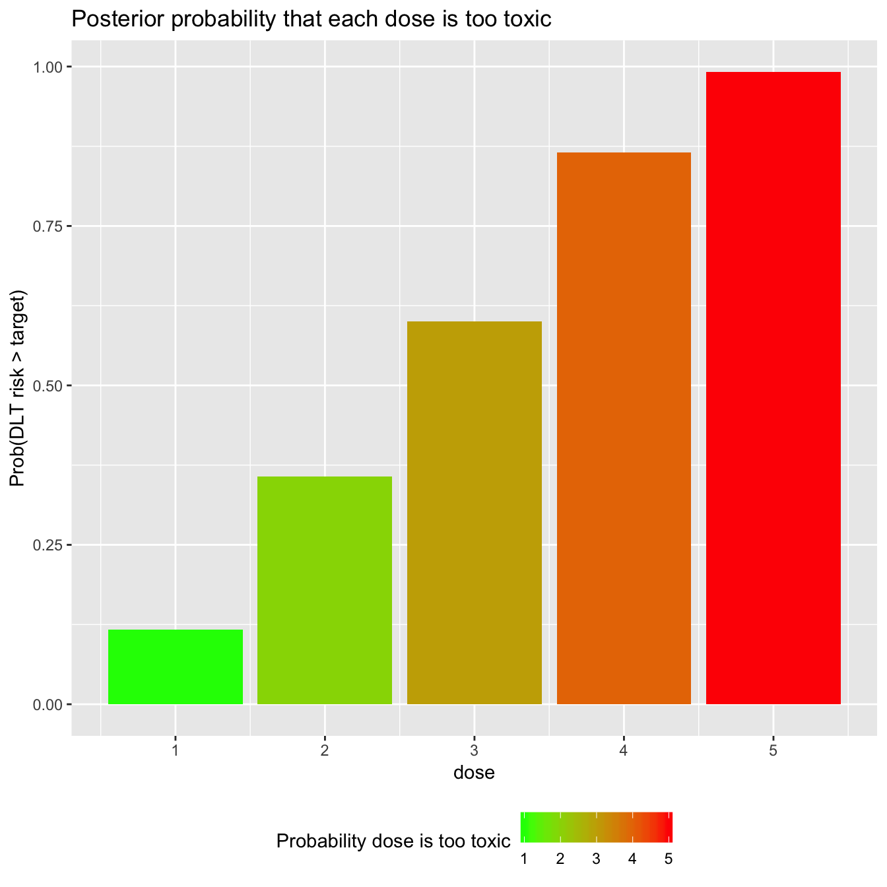

Visualisation with CRM
Kristian Brock
2020-04-06
Source:vignettes/CRM-visualisation.Rmd
CRM-visualisation.RmdIn the general introductory CRM vignette, we introduced the different flavours of the Continual Reassessment Method (CRM) implmented in trialr. In this vignette, we demonstrate some visualisation methods that will be useful for conveying inferences to investigators and the wider research community.
The following visualisation methods are applicable in all trialr variants of the CRM because they rely only on the family of prob_tox parameters that are estimated by all CRM models.
For illustration, let us assume that we have treated 6 patients at 3 dose-levels:
| Patient | Cohort | Dose-level | DLT |
|---|---|---|---|
| 1 | 1 | 2 | 0 |
| 2 | 1 | 2 | 0 |
| 3 | 2 | 3 | 0 |
| 4 | 2 | 3 | 0 |
| 5 | 3 | 4 | 1 |
| 6 | 3 | 4 | 1 |
outcomes <- '2NN 3NN 4TT'
and that we are using the empiric CRM with the following prior to target the dose with Prob(DLT) closest to 25%:
skeleton <- c(0.05, 0.15, 0.25, 0.4, 0.6) target <- 0.25
To access the Stan implementations of the CRM, we must load trialr:
library(trialr)
and to fit the data to the model, we run:
fit <- stan_crm(outcomes, skeleton = skeleton, target = target, beta_sd = sqrt(1.34), seed = 123) fit
Recall that we set the random number generator seed in demonstrations for reproducibility. You may or may not choose to do this in a real analysis.
We saw before that dose-level 2 is closest to our target toxicity rate of 25%. However, we will probably like to convey this information to the research world in a visually-appealing manner. This is simple with access to the posterior samples.
For ease of plotting with ggplot2, we recompose the posterior samples to a tall “tidy” format using tidyr and dplyr:
library(dplyr) library(tidybayes) prob_tox_samp_tall <- fit %>% gather_draws(prob_tox[dose]) %>% rename(prob_dlt = .value) %>% ungroup
The tidy data looks like this:
prob_tox_samp_tall %>% head(10)
## # A tibble: 10 x 6
## dose .chain .iteration .draw .variable prob_dlt
## <int> <int> <int> <int> <chr> <dbl>
## 1 1 1 1 1 prob_tox 0.00833
## 2 1 1 2 2 prob_tox 0.000414
## 3 1 1 3 3 prob_tox 0.0104
## 4 1 1 4 4 prob_tox 0.0800
## 5 1 1 5 5 prob_tox 0.00109
## 6 1 1 6 6 prob_tox 0.00109
## 7 1 1 7 7 prob_tox 0.177
## 8 1 1 8 8 prob_tox 0.146
## 9 1 1 9 9 prob_tox 0.194
## 10 1 1 10 10 prob_tox 0.498Boxplots would be a traditional way of visualising the distributions of the probability of toxicity at each dose:
library(ggplot2) prob_tox_samp_tall %>% ggplot(aes(x = dose, y = prob_dlt, group = dose)) + geom_boxplot() + ylim(0, 1) + labs(title = 'Boxplot of Prob(DLT) under CRM')

However, boxplots give only limited information on the distributions. For instance, it might be tempting to assume that the probability of toxicity is normally distributed at each dose-level. The boxplots suggest some wide tails. This inference is much more clear, however, using a violin-plot:
prob_tox_samp_tall %>% ggplot(aes(x = dose, y = prob_dlt, group = dose)) + geom_violin(fill = 'orange') + ylim(0, 1) + labs(title = 'Violin plot of Prob(DLT) under CRM')

If you are a fan of post-punk UK music (and you have installed the ggridges package), you may however prefer to show this information using a ridge plot, aka a joyplot
library(ggridges) prob_tox_samp_tall %>% mutate(dose = factor(dose)) %>% ggplot(aes(x = prob_dlt, y = dose, fill = dose)) + geom_density_ridges() + theme(legend.position = 'none') + labs(title = 'Joyplot of Prob(DLT) under CRM') + theme(legend.position = 'bottom')

Hopefully none of us would try to claim these posterior probabilities of toxicity are normally distributed under this model. Assuming normality has been one method for performing posterior inference with CRM models in the non-MCMC setting. With the posterior samples provided by rstan, we do not need to assume.
We will naturally want to visualise quantities beyond just the probability of toxicity. We learned in the introductory CRM vignette that with the full Bayesian CRM provided by trialr and rstan, we can calculate the probability that each dose is the maximum tolerable dose (MTD).
We can visualise the MCMC candidates for the dose-toxicity curve on one plot. Colouring them by the MTD candidate they propose (i.e. using a single colour for all the curves that suggest dose-level 1 is the maximum tolerable dose, etc), we get an idea of uncertainty still in this trial:
prob_tox_samp_tall %>% group_by(.draw) %>% summarise(mtd = dose[which.min(abs(prob_dlt - target))]) %>% mutate(mtd = factor(mtd)) -> mtd_candidates prob_tox_samp_tall %>% left_join(mtd_candidates, by = '.draw') %>% filter(.draw <= 200) %>% ggplot(aes(x = dose, y = prob_dlt, group = .draw)) + geom_line(aes(col = mtd), alpha = 0.5) + geom_hline(yintercept = target, col = 'red', linetype = 'dashed') + labs(title = 'The identify of the MTD is still shrouded in mystery', y = 'Prob(DLT)', col = 'MTD') + theme(legend.position = 'bottom')

We used just 200 curves above to avoid saturating the plot. We can visualise that data rather more bluntly:
mtd_candidates %>% count(mtd) %>% mutate(prob_mtd = n / sum(n)) %>% ggplot(aes(x = mtd, y = prob_mtd, fill = mtd)) + geom_col() + labs(x = 'MTD') + theme(legend.position = 'bottom')

In this interim stage, each of the first four doses could plausibly be the MTD, but the top dose looks unlikely. This information was not readily available from some of the above plots of the probabilities of toxicity.
We might also like to visualise the probability that the toxicity rate at each dose exceeds our target toxicity rate.
fit %>% gather_draws(prob_tox[dose]) %>% group_by(dose) %>% summarise(prob_too_toxic = mean(.value > target)) %>% ggplot(aes(x = dose, y = prob_too_toxic, fill = dose)) + geom_col() + scale_fill_gradient(low="green", high="red") + labs(title = 'Posterior probability that each dose is too toxic', y = 'Prob(DLT risk > target)', fill = 'Probability dose is too toxic') + theme(legend.position = 'bottom')

Based on our prior and the data assembled thus far, dose-levels 4 and 5 look quite likely to be overdoses.
trialr
trialr is available at https://github.com/brockk/trialr and https://CRAN.R-project.org/package=trialr